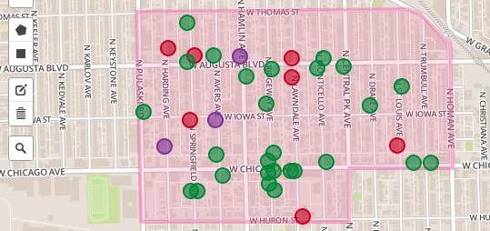

Crime Around Us is a tool for browsing crimes reported to the City of Chicago Police Department from 2001 to present.
This site, which is updated daily from the Chicago Data Portal, allows anyone to search for crime in any area of the city by drawing a box or a custom shape on the map like so:

Additionally, you can filter by the date the crime was reported, time of day, crime type and type of location. Read our help page to learn more about using these filters.
This app was originally built by Eric van Zanten, a web developer in Chicago who works for DataMade who also created a visualization that compares daily temperature and crime.
Crime Around Us is currently being developed in partnership with DataMade and LISC Chicago. The database with all our crime data is hosted by The Smart Chicago Collaborative and the website is hosted on Github Pages.
All of the code for this project is open source. It's comprised of a database of crime data and this website for bowsing it.
Crime API - A python app that serves up crime data.
Crime Around Us - An HTML and Javascript website
Found a bug? Have a suggestion? Report it on our issue tracker! If you'd rather email us, get in touch at info (at) datamade.us